Практичні курси · журнал «ДентАрт» 2015 №1 (78)
Діагностика і тактика ведення поєднаної одонтогенно-синусної патології
Diagnosis and Tactics of Co-odontogenic Sinus Disease
Тривалий час одонтогенні синусити вважалися сферою хірургічної стоматології з радикальним лікуванням. Гостра симптоматика з боку гайморової пазухи, наявність ендодонтично лікованих зубів і відсутність адекватних методів діагностики призводили до втрати бічних зубів з необхідністю подальшого відновлення цілісності зубних рядів. Розвиток ендодонтії як науки, поява оптичного збільшення і конусно-променевої комп'ютерної томографії (КПКТ) відкрили нові можливості ведення цієї комбінованої патології.
Порожнина пазухи вистелена оболонкою товщиною в середньому 2 мм, яка продукує рідину, покриваючи слизову тонким шаром (фото 1, 2). Клітини мембрани (мембрана Шнайдера), представлені миготливим циліндричним епітелієм, сприяють руху виробленого секрету в напрямку вихідного отвору (остіум — отвір діаметром до 3 мм), розташованого в середньому носовому ходу (фото 3). При закритті остіуму відбувається накопичення рідини, що призводить до утворення риногенного синуситу.
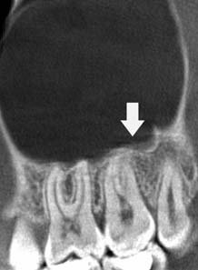
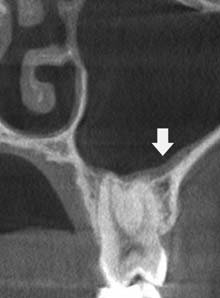
Відомі 3 типи будови гайморової пазухи:
- Склеротичний. При цьому мається достатній обсяг кісткової тканини між коренями і дном синуса (фото 4). У разі патологічних процесів у періапікальних тканинах бічних зубів зміни в слизовій пазухи буде видно на пізніх стадіях (фото 5).
- Змішаний. При радіологічному методі дослідження корені зубів прилягають до дна синуса (фото 6).
- Пневматичний. При аналізі двомірної рентгенологічної картини характеризується проектуванням коренів зубів на ділянку гайморової пазухи (фото 7, 8). На комп'ютерній томограмі — альвеолярна бухта, розташована між вестибулярними і піднебінними коренями (фото 9), або корені проникають у просвіт синуса, що спостерігається рідше (фото 10). За такої ситуації будь-які зміни в пульпі і періапікальних тканинах призводитимуть до активної реакції мембрани Шнайдера (фото 11).
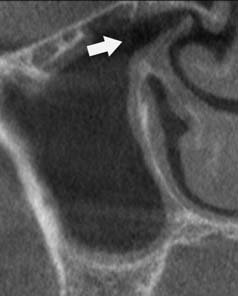
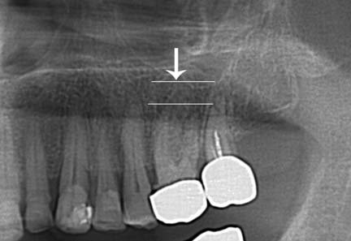
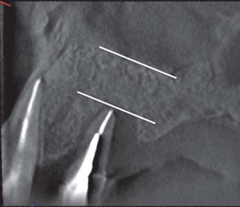
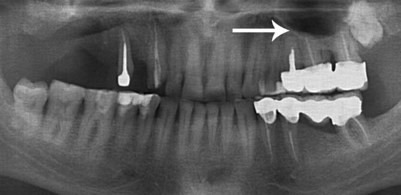
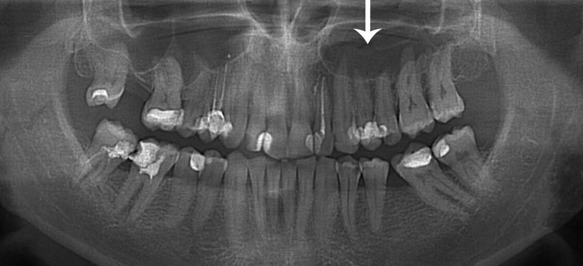
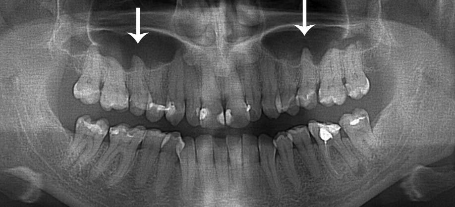
Умовно верхньощелепну пазуху (антрум) поділяють на 3 частини (фото 12):
- передня — до мезіальної поверхні першого моляра;
- середня — від мезіальної поверхні першого моляра до дистальної поверхні другого моляра;
- задня — від дистальної поверхні другого моляра.
Кісткові перегородки, розташовуючись переважно у передньому відділі (до 73%), маючи вертикальну або горизонтальну конфігурацію, можуть обмежувати будь-який патологічний процес, не даючи можливості поширюватися (фото 13).
Розрізняють такі механізми виникнення синуситів: риногенний, одонтогенний і комбінований, у більшості випадків ініційований одонтогенним шляхом.
Діагностика
Збір анамнезу захворювання, визначення вітальності зуба (детально описані в журналі ДентАрт15) і радіодіагностика (інтраоральна рентгенографія зуба, ортопантомограма або конусно-променева комп'ютерна томографія) — ключові методи діагностики. Як найбільш інформативний метод серед радіологічних, рекомендована конусно-променева комп'ютерна томографія (фото 14, 15).
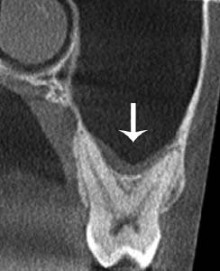
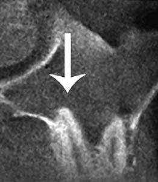
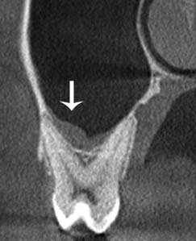
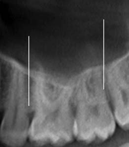
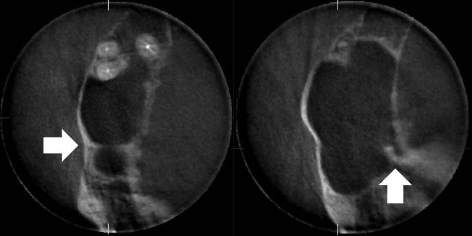
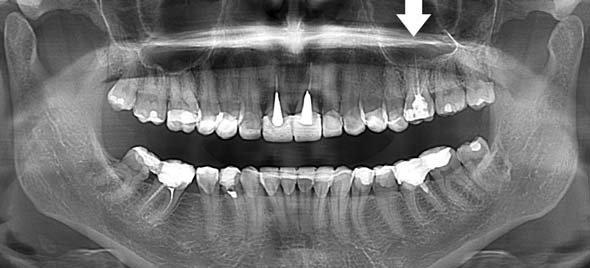
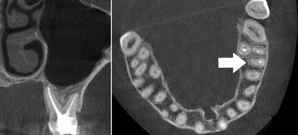
Однак при зменшенні променевого навантаження шляхом зниження сили струму та анодної напруги виключена можливість диференціювати патологічний вміст гайморової пазухи і визначити м'якотканинний компонент, представлений гіпертрофією слизової оболонки, або псевдокістою одонтогенного походження, або справжньою кістою, не пов'язаною із зубами. У такому випадку тест вітальності вкаже на першопричину: при вітальних зубах — риногенну, при девітальних — одонтогенну, що визначатиме різну клінічну тактику ведення (фото 16).
За риногенної природи відбувається набряк слизової Шнайдера з утворенням великої кількості рідини і закриттям остіуму — внаслідок мікробної інвазії або дії алергена (фото 17). Обструкція можлива через анатомічні особливості — викривлення перегородки носа, поліпозні розростання або сторонні тіла. Такі умови сприяють бактеріальній колонізації. Це супроводжується гострою клінічною симптоматикою: порушенням носового дихання, лицьовими болями і тиском, ринореєю, головним і зубним болем у ділянці молярів. На комп'ютерній томограмі візуалізується затінення просвіту синуса. Зуби можуть бути відсутні, а при їх наявності тест вітальності дає позитивну реакцію, яка відсутня після усунення подразника і не має пролонгованого характеру. За наявності ендодонтично лікованих зубів ознак апікального періодонтиту немає, рентгенологічно визначається адекватне ендодонтичне лікування.
Лікування провадить оториноларинголог, воно передбачає медикаментозну терапію (вазодилататорами), а при негативному консервативному лікуванні — ендоскопічну хірургію для створення відтоку або видалення патологічного вмісту пазухи.
При одонтогенній природі симптоматика з боку синуса в більшості випадків відсутня. На конусно-променевій томограмі визначається м'якотканинний компонент, що вистилає дно пазухи або міститься над причинним зубом (фото 18). Тест вітальності покаже ознаки незворотного пульпіту або повний некроз пульпи.
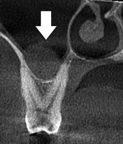
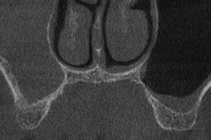
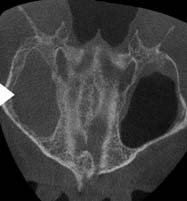
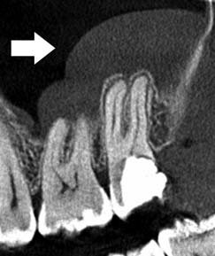
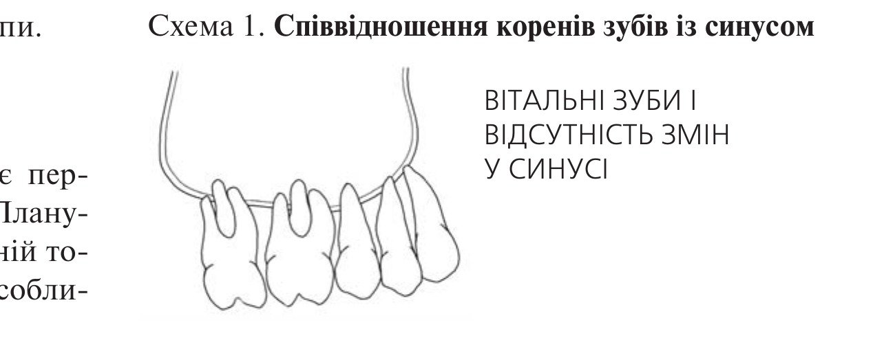
Схема 1. Співвідношення коренів зубів із синусом: вітальні зуби і відсутність змін у синусі.
Тактика ведення
Консервативна ендодонтія передбачає первинне лікування або ортоградну ревізію. Планування роботи проводиться по комп'ютерній томограмі, враховуючи кількість коренів, особливості анатомії, попередню робочу довжину, з подальшою контрольною інтраоральною рентгенограмою обтурації кореневої системи. Динамічні зміни і оцінку результату лікування буде видно після лікування на конусно-променевій томограмі через 6 місяців. При негативному результаті рекомендується хірургічна ревізія (ретроградно, а при неможливості — екстракція причинного зуба) з наступним контролем через 3 місяці. У разі залишкової присутності м'якотканинного компонента хірургічні маніпуляції в синусі проводить оториноларинголог.
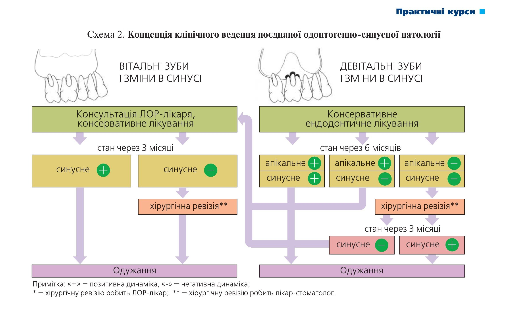
Схема 2. Концепція клінічного ведення поєднаної одонтогенно-синусної патології. Примітка: «+» — позитивна динаміка, «−» — негативна динаміка; * — хірургічну ревізію робить ЛОР-лікар; ** — хірургічну ревізію робить лікар-стоматолог.
Клінічні приклади консервативного ендодонтичного лікування
Пацієнт К. (49 років) звернувся в клініку з приводу лікування зуба 26. На комп'ютерній томограмі є ділянки радіолюценції на кожному корені, що клінічно відповідає хронічному апікальному періодонтиту. Також є ремодуляції дна гайморової пазухи (фото 19). Тест вітальності негативний. При ортоградній ревізії в мезіальній системі виявлено та оброблено другий мезіально-щічний канал (МВ2) (фото 19 в, г). Через 6 місяців, після ендодонтичного лікування і відновлення коронкової частини, на комп'ютерній томограмі констатується відсутність радіолюцентних ділянок у зоні зуба 26. Стан слизової оболонки і конфігурація дна синуса відповідає нормі. Прогноз сприятливий (фото 20).
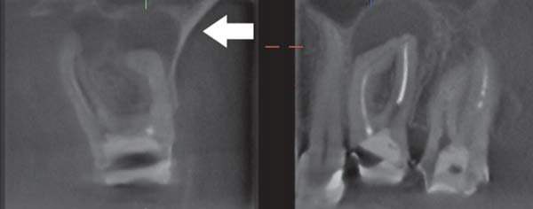
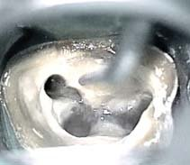
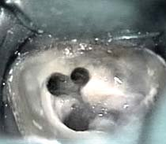
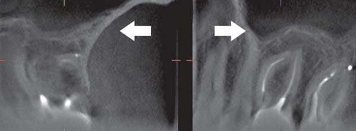
Пацієнт Б. (33 роки) був направлений ЛОР-лікарем з метою санації бічних зубів ліворуч для виключення одонтогенної природи лівобічного синуситу. При аналізі комп'ютерної томографії встановлено неадекватне ендодонтичне лікування зуба 26 і наявність м'якотканинного компонента в порожнині пазухи (фото 21). Під час ортоградної ревізії було знайдено і оброблено другий мезіально-щічний канал. Оскільки в піднебінному корені сухості досягти не вдалося, що свідчило про псевдокісту одонтогенного походження, прийнято рішення про тимчасове внесення гідроокису кальцію на 2 тижні. Під час другого візиту виконано постійну обтурацію і відновлено коронковий герметизм. Через 6 місяців на конусно-променевій комп'ютерній томограмі відзначається фізіологічний стан гайморової пазухи. Радіолюценція в зоні верхівок коренів зуба 26 відсутня. Прогноз сприятливий (фото 22).
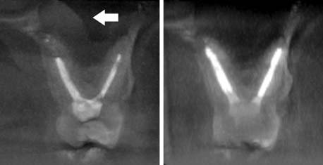
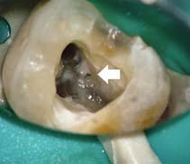
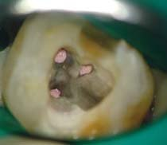
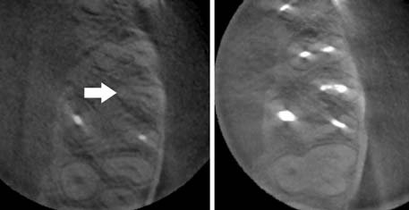
Пацієнт М. (26 років) звернувся в клініку після консультації у щелепно-лицьових хірургів і ЛОР-лікаря з попереднім планом лікування: екстракція зуба 26, хірургічна ревізія синуса і м'якотканинне закриття співустя — у зв'язку з лізисом дна гайморової пазухи одонтогенної природи (фото 23 а, б). Враховуючи рухливість зуба першого ступеня, можливість коронкового відновлення та проведення ендодонтичної ревізії, а також молодий вік пацієнта, прийнято рішення про ортоградну ревізію з наступним динамічним спостереженням протягом півроку. Як і в попередніх випадках, однією з очевидних проблем був необроблений другий мезіально-щічний канал (фото 23 в-е). На конусно-променевій комп'ютерній томограмі через 6 місяців констатується повне відновлення дна синуса і фізіологічна ширина оболонки Шнайдера. Прогноз сприятливий (фото 24).
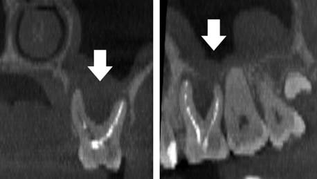
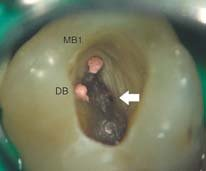
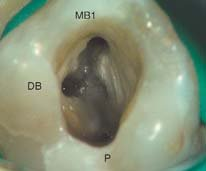
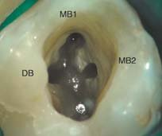
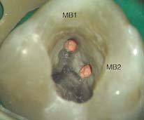
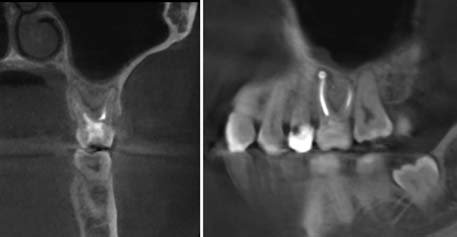
Клінічний приклад радикального хірургічного лікування
Пацієнтка К. (50 років) звернулася в клініку для тотальної реабілітації порожнини рота (фото 25). У правому синусі є чужорідне тіло ятрогенного походження (фото 26). Після письмового дозволу ЛОР-лікаря на хірургічні маніпуляції хірург-стоматолог провів операцію видалення стороннього тіла (фото 27). Через 3 місяці, маючи позитивну динаміку (фото 28), здійснено синус-ліфтинг з установкою дентальних імплантатів (фото 29). Через 10 місяців комплексне лікування пацієнтки було закінчено (фото 30, 31).
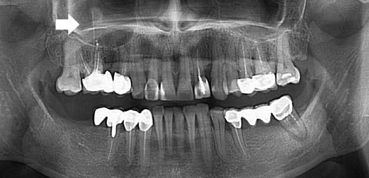
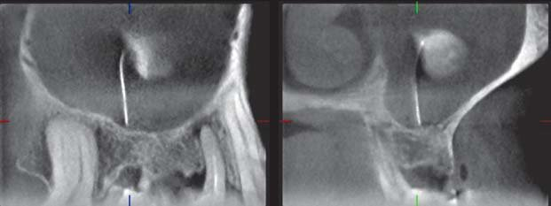
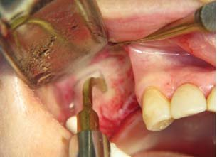
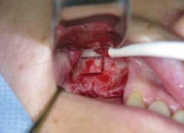
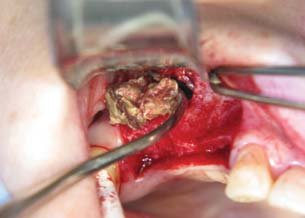
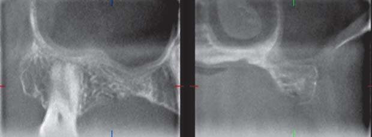
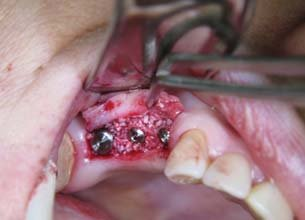
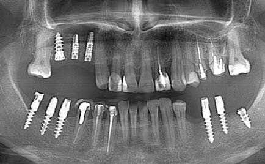
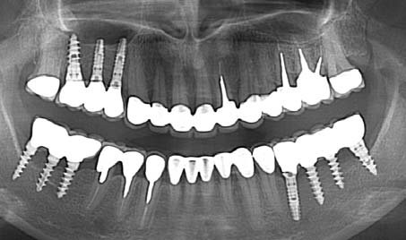
Висновки
Конусно-променева комп'ютерна томографія обов'язкова при діагностиці поєднаних уражень щелепно-лицьової зони. Високоінформативна комп'ютерна діагностика, доповнюючи клінічні методи, сприяє раціональному вибору стратегії лікування, що підвищує її ефективність у разі комбінованої одонтогенно-синусної патології.
Література
- Thunthy, K.H. Diseases of the maxillary sinus. Gen Dent. 1998; 46: 160–165.
- Brook, I. Sinusitis of odontogenic origin. Otolaryngol Head Neck Surg. 2006; 135: 349–355.
- Nishimura, T. and Iizuka, T. Evaluation of odontogenic maxillary sinusitis after conservative therapy using CT and bone SPECT. Clin Imaging. 2002; 26: 153–160.
- Nair, U.P. and Nair, M.K. Maxillary sinusitis of odontogenic origin: cone-beam volumetric computerized tomography-aided diagnosis. Oral Surg Oral Med Oral Pathol Oral Radiol Endod. 2010; 110: e53–e57.
- Obayashi, N., Ariji, Y., Goto, M. et al. Spread of odontogenic infection originating in the maxillary teeth: computerized tomographic assessment. Oral Surg Oral Med Oral Pathol Oral Radiol Endod. 2004; 98: 223–231.
- Rak, K.M., Newell, J.D. 2nd, Yakes, W.F., Damiano, M.A., and Luethke, J.M. Paranasal sinuses on MR images of the brain: significance of mucosal thickening. AJR Am J Roentgenol. 1991; 156: 381–384.
- Arias-Irimia, O., Barona-Dorado, C., Santos-Marino, J.A., Martinez-Rodriguez, N., and Martinez-Gonzalez, J.M. Meta-analysis of the etiology of odontogenic maxillary sinusitis. Med Oral Patol Oral Cir Bucal. 2010; 15: e70–e73.
- Eberhardt, J.A., Torabinejad, M., and Christiansen, E.L. A computed tomographic study of the distances between the maxillary sinus floor and the apices of the maxillary posterior teeth. Oral Surg Oral Med Oral Pathol. 1992; 73: 345–346.
- Poyton, H.G. Maxillary sinuses and the oral radiologist. Dent Radiogr Photogr. 1972; 45: 43–50.
- Bomeli, S.R., Branstetter, BFt, and Ferguson, B.J. Frequency of a dental source for acute maxillary sinusitis. Laryngoscope. 2009; 119: 580–584.
- Longhini, A.B., Branstetter, B.F., and Ferguson, B.J. Unrecognized odontogenic maxillary sinusitis: a cause of endoscopic sinus surgery failure. Am J Rhinol Allergy. 2010; 24: 296–300.
- Costa, F., Emanuelli, E., Robiony, M., Zerman, N., Polini, F., and Politi, M. Endoscopic surgical treatment of chronic maxillary sinusitis of dental origin. J Oral Maxillofac Surg. 2007; 65: 223–228.
- Friedman, S. Considerations and concepts of case selection in the management of post-treatment endodontic disease (treatment failure). Endod Topics. 2002; 1: 54–78.
- Cotton, T.P., Geisler, T.M., Holden, D.T., Schwartz, S.A., and Schindler, W.G. Endodontic applications of cone-beam volumetric tomography. J Endod. 2007; 33: 1121–1132.
- Кулыгин О. Использование холодового теста для определения витальности пульпы зуба в клинике // ДентАрт. — 2014. — №2. — С. 18-23.